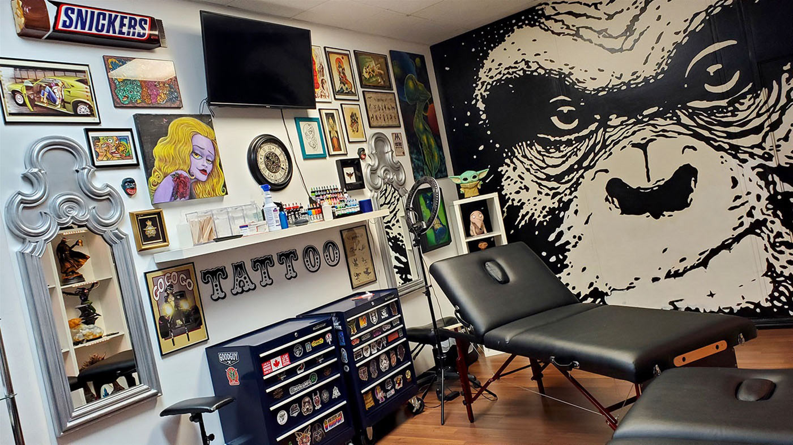

La nostra innovativa idea si basa sul problema della scarsa efficienza e velocità che hanno i professionisti nel tatuare e vengono effetuate settimane se non mesi dalla prenotazione.
Lo studio di tatuaggi efficiente offre un'ampia selezione di disegni personalizzati e tatuaggi di alta qualità. L'ambiente è confortevole e accogliente, con una atmosfera rilassante che aiuta i clienti a sentirsi a proprio agio durante il processo di tatuaggio. Inoltre, lo studio offre anche servizi di rimozione tatuaggi e copertura tatuaggi, rendendo questo studio una scelta ideale per tutte le tue esigenze di tatuaggio.
Il robot è altamente programmato e utilizza strumenti sterilizzati per garantire la sicurezza e la salute dei clienti. Il personale è sempre disponibile per rispondere alle domande e fornire consigli sul tatuaggio, e l'impianto è dotato di tecnologie all'avanguardia per garantire risultati precisi e dettagliati.